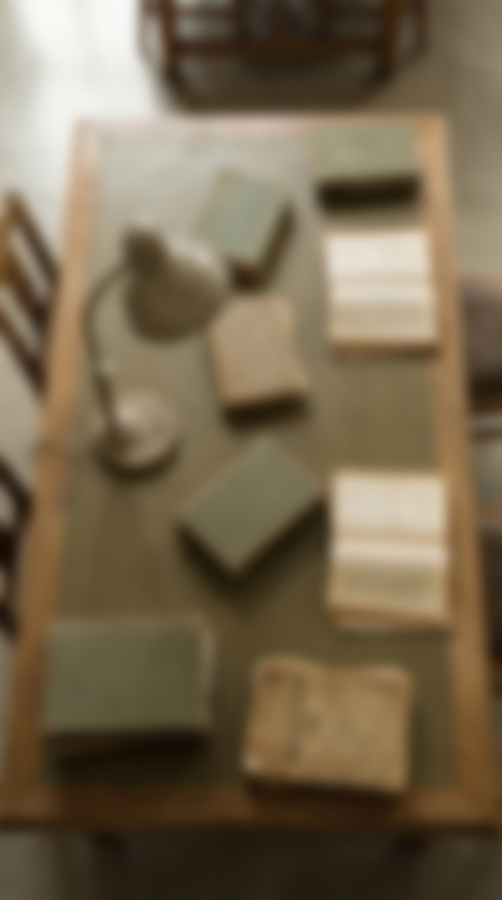
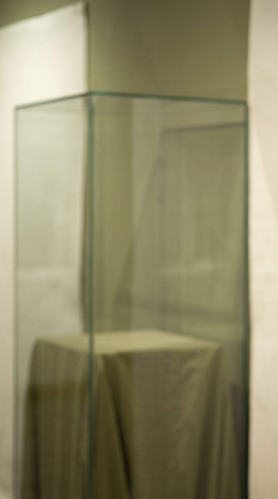

1 · fl_table_olive.jpg
T1 Tischgrund oliv (ersetzt assets/bg/base.jpg) · image · 1536x2752 · keine Schleife · 2 Credits

Stand 2026-11-02 · Higgsfield Ultra · 45 Bausteine · 106 Credits · Lizenz: Higgsfield Terms of Service section 4.4: 'Company does not claim ownership of any of your Inputs or Outputs, nor does it restrict your commercial use of Outputs.' Rights in exported Outputs survive cancellation. (Wortlaut wie im Scutoria-Paket vom 2026-10-30.)
T1 Tischgrund oliv (ersetzt assets/bg/base.jpg) · image · 1536x2752 · keine Schleife · 2 Credits
T2 Tischgrund mit leerem Kartenbogen schraeg · image · 1536x2752 · keine Schleife · 2 Credits

T3 Tischgrund dunkler fuer Schlussszenen (nur wenig dunkler als T1, Rest per Schleier im Code) · image · 1536x2752 · keine Schleife · 2 Credits

P1 Hadernpapier leer, gerissener Rand rechts (Befundblatt) · image · 1536x2752 · keine Schleife · 2 Credits

P2 altes Karopapier, Linien blass · image · 1536x2752 · keine Schleife · 2 Credits

K1 Karte Aegaeis und Griechenland (Polybios, Hellespont) · image · 1536x2752 · keine Schleife · 2 Credits

K2 Britannien und Irland (Hadrianswall, Armada-Feuer, Martello) · image · 1536x2752 · keine Schleife · 2 Credits

K3 Aermelkanal mit beiden Kuesten (PLUTO, Mulberry, Wetterprognose 1944) · image · 1536x2752 · keine Schleife · 2 Credits

K4 Oberrhein und Alpenvorland (Limes, Rheinbruecke, Neuf-Brisach) · image · 1536x2752 · keine Schleife · 2 Credits

K5 Frankreich ganz (Cassini, Chappe) · image · 1536x2752 · keine Schleife · 2 Credits

K6 Mitteleuropa mit Donau (Josephinische Landesaufnahme) · image · 1536x2752 · keine Schleife · 2 Credits

K7 Finnischer Meerbusen (Suomenlinna) · image · 1536x2752 · keine Schleife · 2 Credits

K8 Nordatlantik (Knoten, LORAN) · image · 1536x2752 · keine Schleife · 2 Credits

M1 Archivregale unscharf (Kartons ohne Schrift) · image · 1536x2752 · keine Schleife · 2 Credits
M2 Lesesaaltisch mit Leselampe von oben, unscharf · image · 1536x2752 · keine Schleife · 2 Credits

M3 leere Vitrine mit Stoffboden, unscharf · image · 1536x2752 · keine Schleife · 2 Credits

Clip: Fluegelarme des optischen Telegrafen wechseln die Stellung; Startbild ist fl_real_optical_telegraph.jpg · video · 1080x1920 · 8.03 s · keine Schleife · 10 Credits

Video kling_o3_flf · Job 2a5896c3-0e0a-41e5-8e9a-e44e0de3117d · 10 Credits
Abnahme Sichtpruefung 03.11.: keine Schrift, keine Waffen, Flaggen, Hoheitszeichen oder Uniformen, kein Gesicht, farbig statt Archivfoto-Look; im Video Stempel KI-REKONSTRUKTION · Nahtfehler erstes/letztes Bild 4.3/255 · Helligkeit t0 85.5/82.9/33.6 %, Mitte 85.1/81.9/33.7 % · Textzone 86.1 %
Video: The two large signal arms of the optical telegraph slowly swing into a new position and stop, the mast stays still, clouds drift slightly, static camera, no people, no flags, no text.
Realbild: Holzwerkbank im Tageslicht, Mitte frei · image · 1536x2752 · keine Schleife · 2 Credits

Realbild: Haende mit Stechzirkel ueber leerem Pergament · image · 1536x2752 · keine Schleife · 2 Credits

Realbild: Huegelkette im Morgennebel, Sichtachse · image · 1536x2752 · keine Schleife · 2 Credits

Realbild: Steilkueste, Brandung, grauer Himmel · image · 1536x2752 · keine Schleife · 2 Credits

Realbild: Schreibstube 18. Jh. mit Federkiel und leeren Boegen · image · 1536x2752 · keine Schleife · 2 Credits

Realbild: Deck eines Segelschiffs mit Tauen, ohne Flaggen und Geschuetze · image · 1536x2752 · keine Schleife · 2 Credits

Realbild: Messkette, Messlatten und Pfloecke auf der Wiese · image · 1536x2752 · keine Schleife · 2 Credits

Realbild: Messing-Theodolit auf Holzstativ in der Daemmerung · image · 1536x2752 · keine Schleife · 2 Credits

Realbild: Navigationstisch in der Kajuete mit leerer Seekarte · image · 1536x2752 · keine Schleife · 2 Credits

Realbild: Telegrafenpult um 1900 mit Morsetaste · image · 1536x2752 · keine Schleife · 2 Credits

Realbild: Vorratsraum mit Dosen ohne Etikett, Faessern, Saecken · image · 1536x2752 · keine Schleife · 2 Credits

Realbild: Erdwall mit Graben und Palisade · image · 1536x2752 · keine Schleife · 2 Credits

Realbild: Fernschreiber mit Lochstreifen · image · 1536x2752 · keine Schleife · 2 Credits

Realbild: Steinmauerrest auf einem Huegelkamm · image · 1536x2752 · keine Schleife · 2 Credits

Realbild: Sternfoermige Bastionsmauer mit Graben, ohne Kanonen · image · 1536x2752 · keine Schleife · 2 Credits

Realbild: Holzmodell einer Festungsstadt · image · 1536x2752 · keine Schleife · 2 Credits

Realbild: Kupferkessel ueber Holzfeuer, Feldkueche · image · 1536x2752 · keine Schleife · 2 Credits

Realbild: Postsaecke und Sortierregal, Briefe ohne Adresse · image · 1536x2752 · keine Schleife · 2 Credits

Realbild: Werkhalle 19. Jh. mit Riemenantrieb · image · 1536x2752 · keine Schleife · 2 Credits

Realbild: Gestapelte genormte Stahlpaneele auf dem Werkplatz · image · 1536x2752 · keine Schleife · 2 Credits

Realbild: Optischer Telegraf mit Fluegelarmen bei Tag (Startbild des Clips) · image · 1536x2752 · keine Schleife · 2 Credits

Realbild: Drehbare Messingscheiben ohne Buchstaben · image · 1536x2752 · keine Schleife · 2 Credits

Realbild: Roehrenregal mit schwachem Gluehen · image · 1536x2752 · keine Schleife · 2 Credits

Realbild: Sanduhr, Logbrett und Leine mit Knoten · image · 1536x2752 · keine Schleife · 2 Credits

Realbild: Gasballon mit Korb im Nebel · image · 1536x2752 · keine Schleife · 2 Credits

Realbild: Taubenschlag mit Tauben · image · 1536x2752 · keine Schleife · 2 Credits

Realbild: Schallspiegel aus Beton an der Kueste · image · 1536x2752 · keine Schleife · 2 Credits

Realbild: Heliograf-Spiegel auf Stativ, Hochebene · image · 1536x2752 · keine Schleife · 2 Credits

Quelle: manifest.json und LICENSE.md in diesem Ordner.